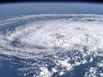

|  |
Past Conferences |
|
We organised the 20th Annual Scottish Fluid Mechanics Meeting, St Andrews, 25 May 2007. The website of the conference (which includes a booklet of short abstracts) is here.
We organised (with ENSICA --- now part of ISAE) the 1st International Conference on High Reynolds Number Vortex Interactions in Toulouse from 29-31 August 2005. The link to the Conference website (which includes the book of extended abstracts) is here.
The sequel conference, the 2nd International Conference on High Reynolds Number Vortex Interactions was held in Brest 31 August-2 September 2009, and was organised by the LPO/UBO, Brest and the Vortex Group, St Andrews.
The third conference of the series was renamed International Conference on Geophysical and Astrophysical Vortex Interactions (ICGAVI19) and was held in St Andrews, 11-14 June 2019. The link to the Conference website is here.